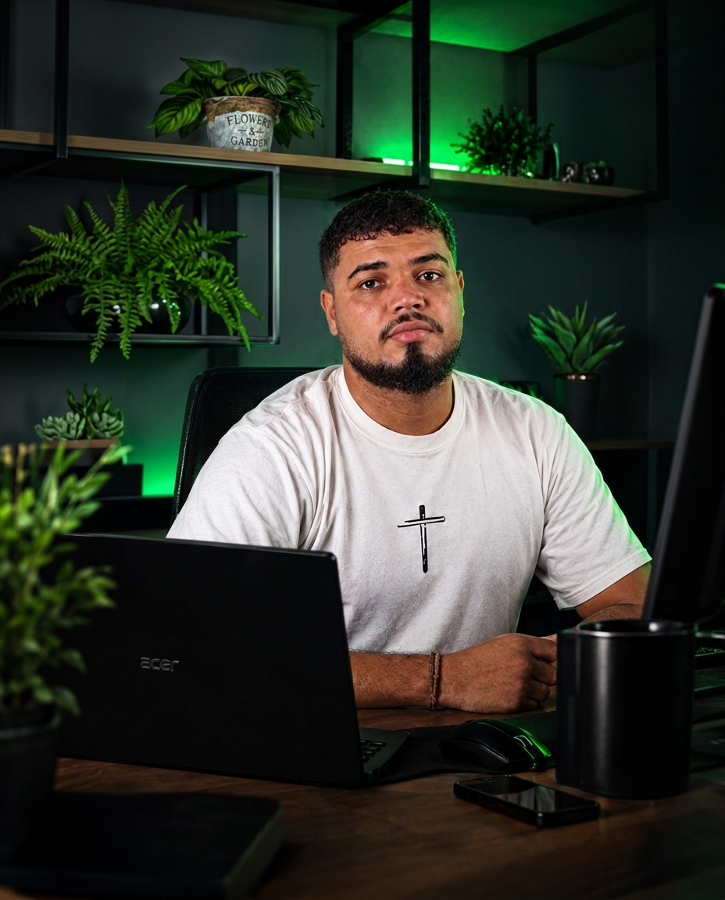

Sites e Landing Pages
Sites modernos, rápidos e responsivos para sua marca ou produto.
Saiba maisAstro Digital
Criamos sites, landing pages, editamos vídeos e imagens, além de soluções modernas como plaquinhas em NFC do Google para levar sua marca para o próximo nível.

Nossos serviços
Da criação de sites à edição de vídeos, passando por artes e soluções NFC, somos a parceria ideal para transformar suas ideias em resultados.
Sites modernos, rápidos e responsivos para sua marca ou produto.
Saiba maisVídeos que prendem a atenção e ajudam sua marca a gerar resultados.
Saiba maisCompartilhe contato, site e redes sociais de forma rápida e inteligente.
Saiba maisPor que escolher a Astro?
A Astro Digital é movida por ideias, tecnologia e foco em resultados. Aqui, seu projeto é tratado com atenção, estratégia e total compromisso.
Entre em contato e solicite seu orçamento.
Vamos conversar sobre o seu projeto!